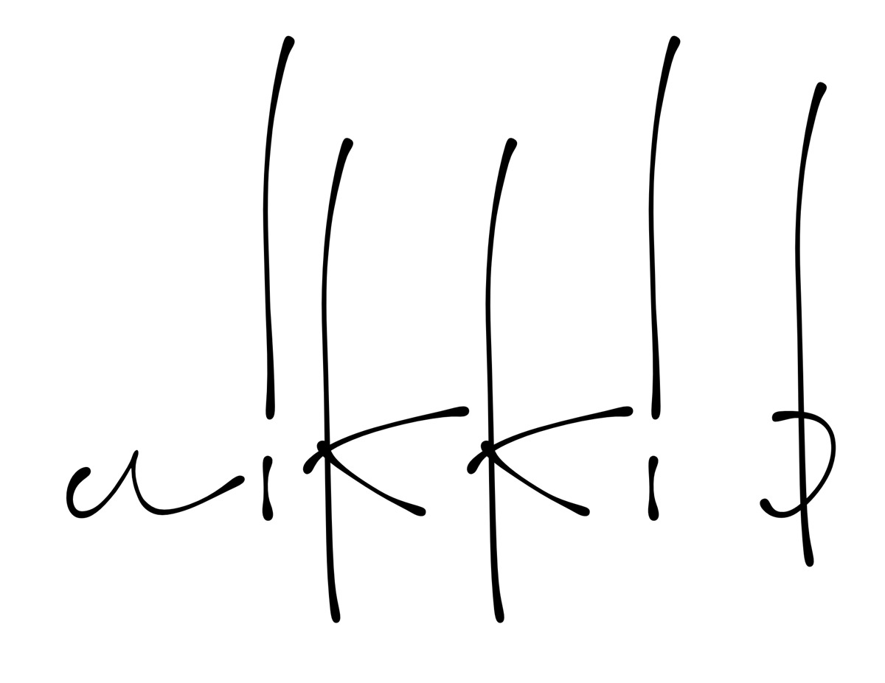
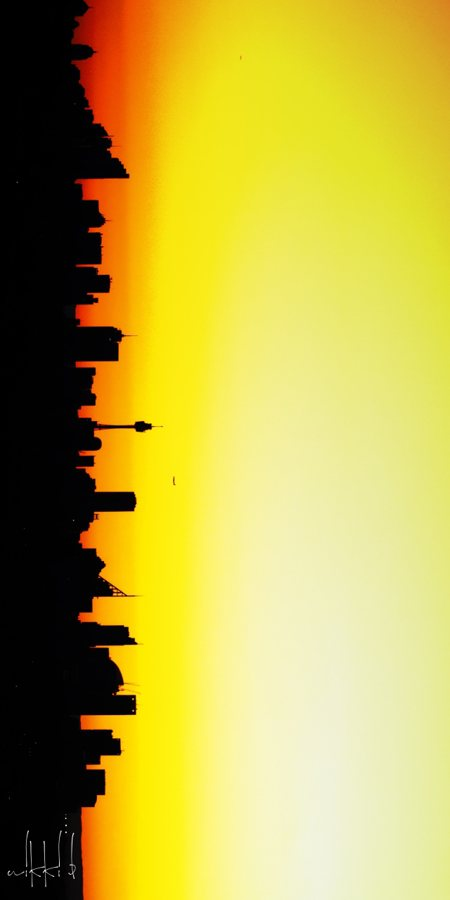
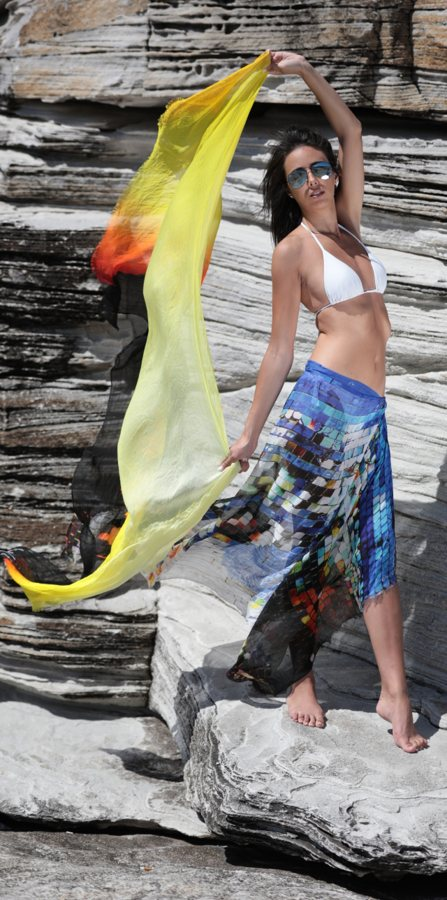

Where photography meets fabric
Wrap
your body
in art
Nikki B is a lifestyle brand inspired by raw and real landscapes, people and style from around the world, each piece foretelling its own original story.

From place to piece
Every scarf begins as a photograph.

Photograph
Nick takes the image somewhere real: Sydney Harbour at dusk, a Lanzarote lava tube, a Hobart night sky. Lovingly taken, unique to the label.

The artwork is printed onto a sustainable textile spun from the cellulose fibre of beech trees, with a texture very like silk.

Wrap
Dual-season sarongs and scarves, 100 cm × 200 cm. The nikkib philosophy is simple: wrap your body in art.
- AUD $120every piece
- 100×200centimetres
- 100% Modalbeech-tree cellulose, silk-like
- Hand washand it will last
Find the one
that's yours
Come and try them on at NITA Gallery, 68 Campbell Street, Surry Hills, or write to us.
live@nikkibfashion.com · nikkibfashion.com